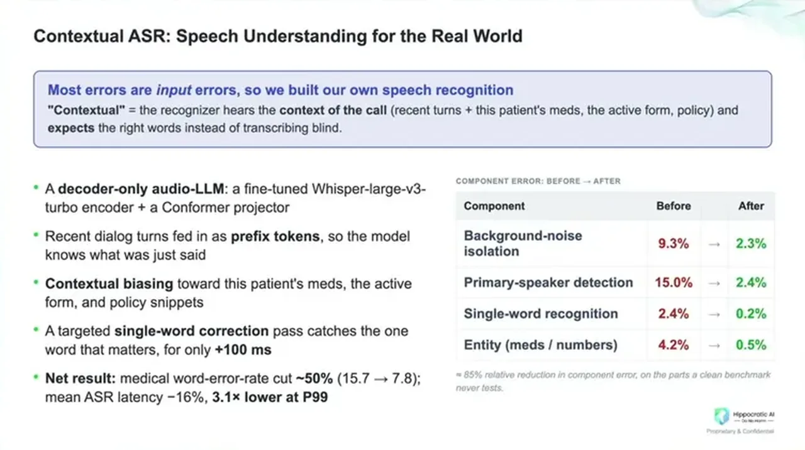
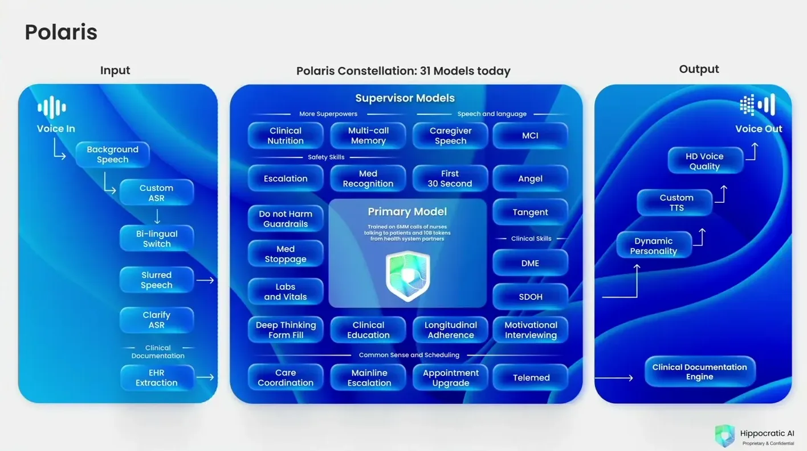
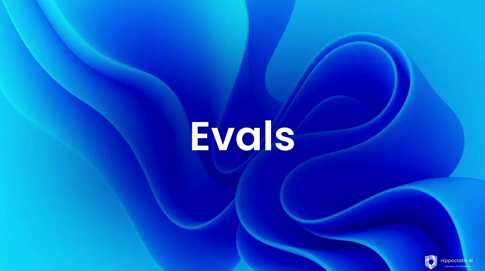
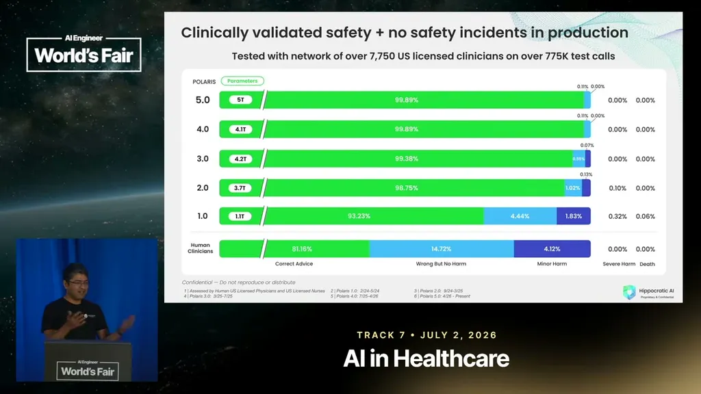

200 Million Patient Interactions Later
Hippocratic AI runs a 31-model Polaris constellation plus a custom clinical ASR at 200M patient conversations and 99.89% no-harm accuracy across 60+ health systems.
If you only read one thing
- Hippocratic has run 200 million clinical conversations with zero significant safety incidents across 60+ health systems (c1).
- Its Polaris architecture runs 31 models in parallel per call, one central model plus 30 specialists that each decide whether they need to speak (c2).
- Graded on the same harm rubric used for human clinicians, the system hits 99.89% no-harm accuracy versus about 81% for humans (c4).
This traces the call path shown on Hippocratic's own Polaris slide: custom ASR and EHR context feed a primary model that routes to 30 supervisor specialists under lossless inference optimizations, then produces voice output and documentation while a harm-grading rubric checks it against human-clinician baselines (ours).
Why this talk is a blueprint, not a take (ours)
Scope: Hippocratic AI's own proactive clinical phone-call product and the Polaris voice-agent architecture behind it; not a general-purpose voice-agent framework for other domains.
A vertically integrated voice stack purpose-built for clinical accuracy at low latency: a custom ASR tuned on clinical speech, a 31-model Polaris constellation (one primary model plus 30 specialists) with lossless inference optimizations (4-bit quantization, speculative decoding, KV cache reuse), and an evaluation loop that grades output against the same harm rubric used for human clinicians, backed by thousands of licensed clinician evaluators.
Prerequisites the talk implies:
- A narrow, safety-critical conversational domain where clinical or specialist accuracy matters more than general-purpose flexibility
- Enough call volume and clinical conversation data to fine-tune a domain-specific ASR encoder and train specialist models
- Infrastructure investment in inference optimization (quantization, speculative decoding, KV caching) since off-the-shelf model latency is too slow for live phone conversation
- Access to licensed clinicians or an equivalent domain-expert pool willing to do continuous human evaluation at scale
- A harm or safety rubric already used to grade human performance in the domain, so AI output can be benchmarked against it directly
What the talk does not say:
- No team size, headcount, or engineering cost figures for building and maintaining the 31-model constellation
- No detail on how the 30 specialist models are individually trained or how new specialists get added over time
- No discussion of inference compute cost or hardware footprint for running 31 models per call
- No failure-rate breakdown outside the scheduling and harm-rubric examples given
- No description of how disagreements between the primary model and specialist models get resolved when specialists conflict
If you were to replicate one thing first: Before building a multi-model constellation, first measure whether your domain's accuracy failures come mainly from speech recognition, as Hippocratic found, or from reasoning, since that determines whether a custom ASR layer or a specialist-routing layer is the higher-leverage first investment.
| Component | What it does (from the talk) | Evidence | Slide |
|---|---|---|---|
| Custom ASR | Decoder-only audio LLM (fine-tuned Whisper V3 encoder plus conformer projector) that cuts medical word error rate over 50% versus off-the-shelf ASR. | c3 · 12:34 |  |
| Primary model | Central model trained on millions of calls that holds the conversation and integrates input from the 30 specialist models. | c2 · 08:22 |  |
| 30 supervisor models | Specialist models (clinical nutrition, medications, labs and vitals, escalation, do-not-harm guardrails, scheduling, and more) that each check if they need to speak, short-circuiting if not. | c2 · 08:22 | |
| 4-bit quantization | Shrinks model computation from 16-bit to 4-bit weights, a lossless change that lowers latency. | c9 · 15:08 |  |
| Speculative decoding | A smaller draft model proposes tokens ahead of time and the main model verifies them in one pass, improving decode latency. | c10 · 15:38 | |
| KV cache | Keeps a large share of long clinical conversations warm in cache, hitting a 96%+ hit rate and speeding up prefill. | c8 · 15:38 | |
| Custom TTS and clinical documentation engine | Produces HD-quality, dynamic-personality voice output and writes call documentation back into the health system. | 09:20 | |
| Harm grading and clinician evaluators | Grades output on the same correctness, no-harm, minor-harm, severe-harm, death rubric used for human clinicians, backed by 7,000+ trained clinicians doing continuous evaluation. | c4 · 18:13 |  |

Scale and safety record
- Hippocratic's product places proactive clinical phone calls to patients.
- As of the talk, it had completed 200 million clinical interactions with zero significant safety incidents, deployed across more than 60 health systems, with an 8.5/10 patient satisfaction rating.
“we've had 200 million clinical interactions. We've had zero significant safety incidents. We've deployed in over 60 plus health systems and have an 8.5 on 10 patient satisfaction rating”
said at 02:06Why a generic voice stack doesn't work
- Off-the-shelf intelligent models take tens of seconds to respond, too slow for a live phone conversation; fast models aren't clinically accurate enough.
- Hippocratic built a vertically integrated stack from the ground up, optimizing every layer, rather than combining existing components, to get both speed and clinical accuracy.
“what we had to do was build a vertically integrated stack ground up bit by bit, optimizing every part of the stack stack”
said at 05:45Polaris: a 31-model constellation
- Rather than one model handling a call, Hippocratic runs 31 models at once inside its Polaris constellation: a primary model trained on millions of clinical calls that holds the conversation, plus about 30 supervisor specialist models (clinical nutrition, medications, labs and vitals, escalation, do-not-harm guardrails, appointment scheduling, and others) that each do a fast check on whether they need to speak, short-circuiting if not.
- Inference optimizations keep this fast and lossless: 4-bit quantization of model weights, speculative decoding where a smaller draft model proposes tokens the main model verifies in one pass, and a KV cache system with a 96%+ hit rate that speeds up the prefill stage by 18x.
“We in fact run 31 models at any given point of time for every conversation”
said at 08:22“we've figured out a way to keep a large chunk of these conversations warm on cache, giving us an over 96% hit rate”
said at 15:38“One is four-bit quantization. So basically what we've done is we've shrunk down the math for model computation to be from 16-bit to”
said at 15:08“The next is speculative decoding. So we have a smaller model that's generating the tokens ahead of time, and then the main model just checks this in one go, and this also has greatly improved latency for us.”
said at 15:38ASR built for clinical accuracy
- A fine-tuned Whisper V3 encoder plus a conformer projector that preserves prosody, combined with conversation context and domain knowledge fed to a decoder-only audio LLM, cuts the medical word error rate by over 50% versus standard off-the-shelf ASR, at P99 latency three times faster than other systems.
“bring down the medical word accuracy rate by over uh 50% um from what we see as standard off-the-shelf models”
said at 12:34Evals at a scale where 1% failure is unacceptable
- At Hippocratic's call volume, a 1% scheduling error rate means 100 people a day get the wrong appointment.
- Catching a 1% error rate with statistical confidence needs about 450 tests to be 99% sure you caught it once, and 1,900 to see it 10 times, so the company combines synthetic data with over 7,000 trained clinicians doing continuous human evaluation.
“even the 99% is pretty bad because 1% error means 100 people a day are going to get the wrong appointment type”
said at 16:41“You need about 450 tests to be 99% sure that you can catch this like 1% error rate and and 1900 tests to be able to see that you've caught it like 10 times”
said at 17:13Underlying detail — every claim, typed and timestamped (10)
| Stance | Claim | t |
|---|---|---|
| asserts | Hippocratic has completed 200 million clinical interactions with zero significant safety incidents, deployed across 60+ health systems, at an 8.5/10 patient satisfaction rating. | 02:06 |
| asserts | Hippocratic runs 31 models in parallel for every call: one central model handling the conversation plus 30 specialist models covering things like labs, medications, and scheduling. | 08:22 |
| asserts | Hippocratic's custom ASR system cuts medical word error rate by over 50% versus standard off-the-shelf models, with P99 latency three times faster than other systems. | 12:34 |
| asserts | Across five generations of the Polaris system, graded on a human clinical-harm rubric, Hippocratic reaches 99.89% no-harm accuracy versus about 81% for humans on the same rubric. | 18:13 |
| asserts | Catching a 1% failure rate with statistical confidence requires about 450 tests to be 99% sure you caught it once, and 1,900 tests to see it caught 10 times, so Hippocratic can't rely on synthetic data alone. | 17:13 |
| warns | At Hippocratic's call volume, a 1% failure rate on scheduling means 100 people a day get the wrong appointment type, which the company treats as unacceptable rather than a rounding error. | 16:41 |
| asserts | Hippocratic built a vertically integrated voice stack from the ground up, optimizing every layer, rather than combining off-the-shelf ASR/LLM/TTS components. | 05:45 |
| asserts | Hippocratic's KV cache compression keeps a large share of long clinical conversations warm in cache, hitting a 96%+ hit rate that speeds up the prefill stage. | 15:38 |
| asserts | Hippocratic shrank model computation from 16-bit to 4-bit as a lossless inference optimization that helped overall latency. | 15:08 |
| asserts | Hippocratic uses speculative decoding, where a smaller model generates tokens ahead of time and the main model verifies them in one pass, to improve latency. | 15:38 |
Machine-readable copy embedded in this page (script#ontology) and in the corpus ontology.